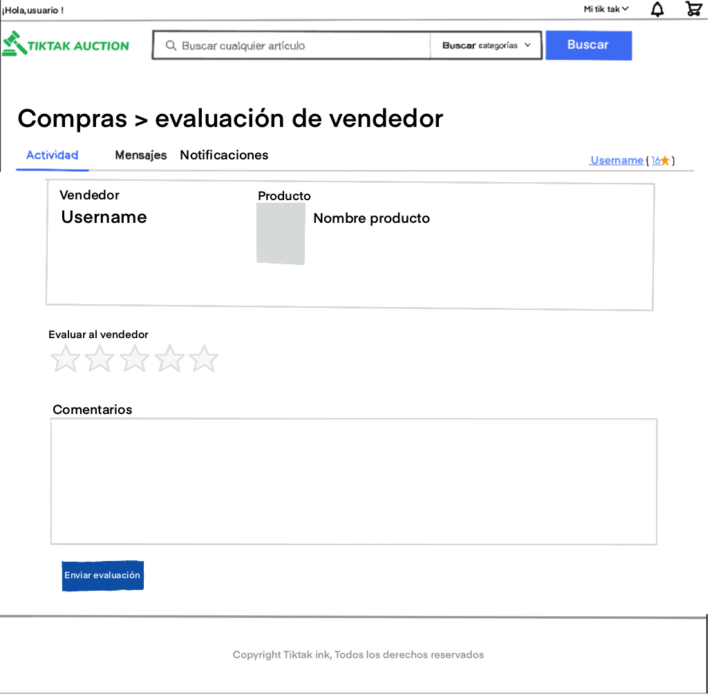
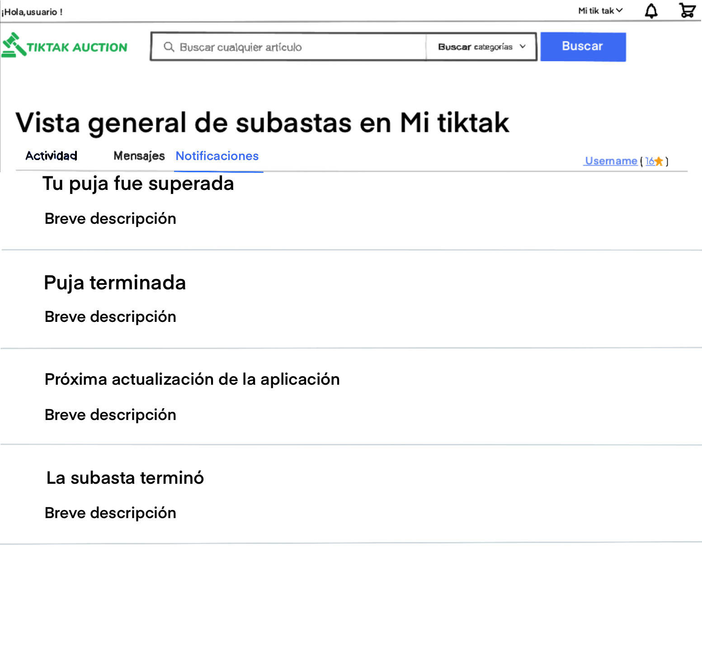

Esta es la página principal de inicio, en esta pagina si no estas registrado no puedes hacer nada mas que mirar y navegar por la página, para identificarte o registrarse puedes pinchar en los enlaces de la parte de arriba a la izquierda
Estas dos páginas son las clásicas de toda aplicación para iniciar sesión o registrarse la de inicio de sesión es un simple formulario básico asique explicaremos mas la de registro.
En nuestro caso lo mas importante de esta pagina seria el radio button indicando si eres particular o empresa, que esto decidirá qué datos pedimos más adelante a la hora de completar el perfil y que clase de verificaciones pediremos como usuario, el resto también es un formulario común
Una vez registrados volvemos a la pagina de inicio y desde ahí pulsando en mi tiktak arriba a la derecha vamos a la pagina de perfil de usuario. Y es desde esta pagina donde podemos ver muchas de las funcionalidades, lo primero que vemos es que podremos ver la actividad de la cuenta y esto son las compras ventas anuncios publicados… y muchas opciones que se muestran y se ven más adelante, también tenemos la pestaña mensajes y notificaciones que se explican en las siguientes pantallas
Esto es la vista general de la pantalla pero lo mas llamativo es el botón de publicar anuncio que aunque habrá mas formas esta es la principal y pulsando en este nos lleva al formulario de subida de producto
Es un formulario normal de subir un producto con su campo título el de subir fotos y poner descripción, la parte importante debes elegir el tipo de subasta que quieres para tu anuncio por defecto será la convencional y el precio inicial de la puja, para terminar, preguntamos si lo quieres publicar ya o programar la publicación, después de esto puedes dar a publicar o guardar como borrador para editarlo más tarde
La pagina de subastas es como se verán los productos una vez publicados y buscados mediante el buscador o la categoría, se podrá filtrar la lista de productos por varios parámetros como tipo de subasta, precio o estado del producto y se podrá pujar desde aquí directamente pero para ver los datos del producto debemos pinchar en el anuncio
Así se vería toda la información del producto y en la parte derecha también está la información básica del vendedor y un enlace para contactarle y hace preguntas
El chat es la forma que tienen el vendedor y el comprador o posibles compradores de ponerse en contacto solo pondrá tu bandeja de entrada y el chat que abras saldrá a la izquierda
En esta pestaña salen todos los productos que has comprado y desde esta pantalla podrás votar tanto el vendedor como el producto
La cesta en la aplicación sirve para confirmar la subasta ganada en caso de no aceptarlo en un tiempo especificado la subasta ganada salta al siguiente, en este apartado puedes acumular varias subastas e ir aceptándolas o dejándolas pasar

Para evaluar al vendedor se debe usar este formulario donde puedes ponerle nota y comentar algo sobre la experiencia
Igual que el vendedor también podemos evaluar el producto que siempre estará relacionado al vendedor y no será una opinión del producto general es decir queremos que se opine del producto pero basado en el vendedor

La página de notificaciones será por donde se avisa al usuario de cualquier cambio en su cuenta esto comprende desde que le han sobre pujado, ha ganado una subasta o un administrador puede avisar de la próxima actualización de la aplicación, a este apartado se puede acceder pulsando la campanita que esta en la esquina superior derecha en casi todas las pantallas.
Otra parte de la funcionalidad de las notificaciones hay que realizarla desde un perfil de administrador y es que los administradores pueden lanzar notificaciones sobre la aplicación, promociones, mensajes corporativos como felicitaciones de navidad… para ello se meterán en su perfil y desde ahí pueden crear una nueva notificación , editar una existente o ver los borradores pendientes.